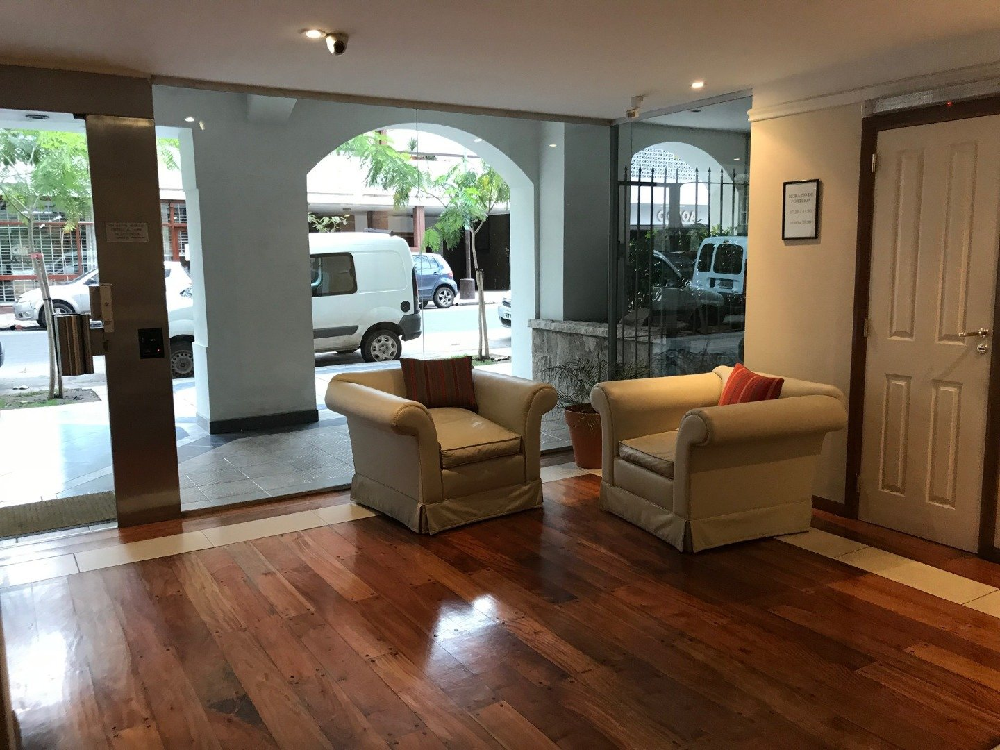
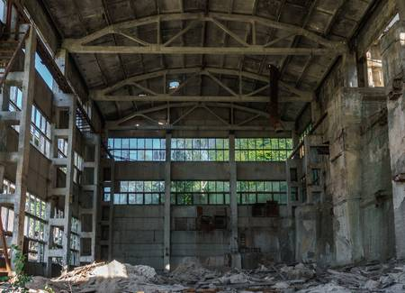

<ion-header>
  <ion-navbar>
    <ion-title>
      Relevamiento Visual
    </ion-title>
  </ion-navbar>
</ion-header>

<ion-content class="card-background-page">
    <ion-card>
        
        <div class="card-title">Cosas Lindas</div>

        <ion-row >
            <ion-col>
                <button ion-button color="primary" clear small icon-start (click)="siguiente('L')">
                  <ion-icon name='images'></ion-icon>
                  Listado
                </button>
            </ion-col>
            <ion-col>
              <button ion-button color="primary" clear small icon-start (click)="irGrafico('L')">
                <ion-icon name='stats'></ion-icon>
                Ver mas votadas
              </button>
            </ion-col>
          </ion-row>

      </ion-card>
    
      <!-- <ion-card (click)="siguiente('F')"> -->
        <ion-card>
        
        <div class="card-title">Cosas Feas</div>

        <ion-row >
          <ion-col>
              <button ion-button color="primary" clear small icon-start (click)="siguiente('F')">
                <ion-icon name='images'></ion-icon>
                Listado
              </button>
          </ion-col>
          <ion-col>
            <button ion-button color="primary" clear small icon-start (click)="irGrafico('F')">
              <ion-icon name='stats'></ion-icon>
              Ver mas votadas
            </button>
          </ion-col>
        </ion-row>
      </ion-card>
</ion-content>
